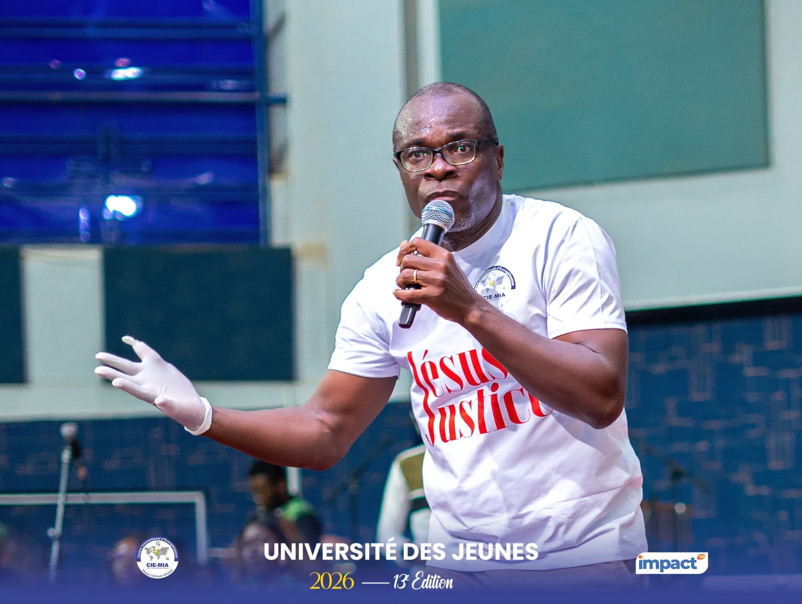

Trois enseignements ont rythmé la deuxième journée des Universités des Jeunes : l'appel à la pureté et à la mission par la marraine Dr Hortense KARAMBIRI, la délivrance et le brisement des chaînes prêchés par le Prophète Voyant Emmanuel SAWADOGO, et l'affirmation de l'identité en Christ enseignée par le Bishop D. F. N'CHO.
Retour sur les temps forts de cette deuxième journée, tels que relayés par le bulletin quotidien N°001 des Universités des Jeunes du CIE/MIA.
Un appel à la jeunesse chrétienne à rester ferme face aux pressions de la société, de la solitude aux réseaux sociaux.
À la 2ᵉ journée des Universités des Jeunes 2026, la marraine de l'événement, Dr Hortense KARAMBIRI, a invité la jeunesse chrétienne à rester ferme face aux pressions de la société. Son enseignement portait sur le thème suivant : « Tu es baptisé(e) du feu et du Saint-Esprit pour la mission ».
Avant d'entrer dans le vif du thème, l'oratrice a évoqué les difficultés auxquelles les jeunes sont confrontés. Elle a cité le chômage, les difficultés économiques, les pressions familiales, les échecs sentimentaux et la solitude qui constituent une source de fragilité. À ces réalités s'ajoutent les réseaux sociaux et la multiplication des contenus numériques. Ces différentes pressions influencent les choix des jeunes à différents niveaux de leur vie et nourrissent leur frustration, leur jalousie et leur complexe.
Face à ces défis, le Dr Hortense KARAMBIRI a appelé les jeunes au discernement, les mettant en garde contre la banalisation de la sexualité, la pornographie et les propositions de gain facile d'argent, car celles-ci constituent des sources de tentation et de perdition. Les jeunes, pour être des ambassadeurs du Royaume des Cieux, doivent cultiver des valeurs de maîtrise de soi, de pureté et de dignité. Leur corps ne doit pas être un instrument de manipulation et ne doit pas faire l'objet d'une quelconque exploitation.
« Il ne regarde pas à l'apparence extérieure, mais au cœur. Rien n'est caché ou secret à ses yeux. »Dr Hortense Karambiri
Poursuivant son enseignement, la marraine n'a pas manqué de rappeler que la vie dans le secret est d'une importance capitale aux yeux de Dieu. Pour relever ce défi, elle a invité ses filleuls à chercher Dieu de tout leur cœur, s'appuyant notamment sur Jérémie 29:13-14 : « Vous me chercherez et vous me trouverez, si vous me cherchez de tout votre cœur... ». La prière, la méditation de la Parole de Dieu et la communion avec le Saint-Esprit doivent ainsi occuper une place importante dans la vie des jeunes.
Par-dessus tout, chaque jeune doit être baptisé de feu et du Saint-Esprit. Le baptême de feu représente une œuvre intérieure de sanctification ; le revêtement du Saint-Esprit équipe ensuite de puissance. Cette puissance n'est toutefois pas destinée à une simple expérience émotionnelle : elle doit conduire à la mission. Les jeunes sont donc appelés à devenir des témoins et des serviteurs du Dieu vivant, à l'image de Joseph qui illustre la résistance face à la tentation, de Daniel qui représente la fidélité à ses convictions dans un environnement hostile, de David qui a montré le courage face à Goliath et de Marie qui a exprimé sa disponibilité pour la mission du Seigneur. Jérémie et Timothée rappellent enfin que la jeunesse n'est pas un obstacle au service de Dieu ; malgré leur âge, ils ont été appelés à exercer des responsabilités.
Au terme de son enseignement, la marraine a encouragé les jeunes à rester fermes dans la foi. Pour elle, la jeunesse chrétienne doit s'appuyer sur la puissance du Saint-Esprit pour affronter les défis de son époque, résister aux tentations et accomplir la mission qui lui est confiée : elle est appelée à être Sel et Lumière — une génération de témoins et de serviteurs de Dieu.
Jérémie 29:13-14
Un ministère de délivrance et de brisement des chaînes et des malédictions en faveur de la jeunesse rassemblée.
À la première matinée des UJ 2026, le Prophète Voyant Emmanuel SAWADOGO a exercé un ministère de « délivrance et de brisement des chaînes et des malédictions » en faveur des jeunes rassemblés à l'occasion.
Dès l'entame de son enseignement, le Prophète Voyant Emmanuel SAWADOGO a centré son message sur « la délivrance et le brisement des chaînes et des malédictions », car pour lui, une jeunesse enchaînée dans le spirituel ne peut être efficace dans le naturel. Fer de lance de tout développement, elle doit prendre conscience de son rôle, combien important, afin de se positionner pour assumer pleinement sa part de responsabilité au moment opportun. Elle ne doit pas être simplement spectatrice des événements en cours et à venir ; elle doit plutôt être une génération appelée à façonner l'avenir de l'Église et de la nation. Cette mission exige une attitude spirituelle particulière : un cœur ouvert, disponible et réceptif à la Parole de Dieu.
Dans son exposé, le Prophète Voyant Emmanuel SAWADOGO a expliqué ce en quoi consiste la malédiction et la délivrance. Il définit la malédiction comme l'action d'attirer ou de prononcer le malheur, l'échec ou la destruction sur la vie d'une personne, d'une famille et d'une communauté ; elle peut résulter de paroles négatives, de pratiques occultes ou encore d'héritages spirituels transmis de génération en génération. À l'inverse, la délivrance est une œuvre salvatrice de Dieu qui consiste à libérer l'Homme de toute forme de malédictions. Elle rompt les liens qui maintiennent l'individu dans l'esclavage, afin de le conduire vers la destinée que Dieu lui a réservée.
S'appuyant sur l'image biblique du « filet de l'oiseleur », extraite de Psaumes 91:3, l'orateur a mis en lumière les nombreux pièges susceptibles d'entraver l'épanouissement spirituel et personnel des jeunes : la maladie, la paresse, la rébellion, le mensonge, la pornographie, la masturbation, la fornication, les mauvaises fréquentations, l'alcool, les stupéfiants et les échecs répétés. Ces réalités agissent comme des pièges invisibles destinés à détourner les jeunes de leur vocation et à les empêcher d'entrer dans leur destinée. Toutefois, le message central demeure celui de l'espérance : aucun filet n'est trop solide pour résister à l'action de Dieu ; toute sorte de filet peut être brisé et l'oiseau peut retrouver sa liberté (Psaume 124:7). De même, toute vie humaine sous une quelconque malédiction peut être délivrée par l'œuvre accomplie de Christ.
« Aucun filet n'est trop solide pour résister à l'action de Dieu. »Prophète Voyant Emmanuel Sawadogo
L'un des points majeurs de l'intervention du Prophète Voyant a porté sur la sanctification. Il a insisté sur le fait que la sainteté ne constitue pas une contrainte imposée au croyant ; elle est une condition essentielle pour expérimenter la puissance de Dieu. Une vie séparée du péché, purifiée et consacrée est disposée à la manifestation de la puissance de Dieu.
Psaumes 91:3 · Psaume 124:7

L'identité, cible privilégiée des attaques spirituelles, et semence de la destinée que Dieu réserve à chacun.
Dans la 2ᵉ soirée des UJ 2026, le Bishop D. F. N'CHO a conduit les participants dans un temps d'enseignement sur « Connais ton identité en Christ ».
Dès l'introduction de son message, l'orateur a souligné que Dieu a attribué une identité à toute chose qu'il a appelée à l'existence. L'identité de l'homme, l'être créé à l'image de Dieu, constitue l'une des principales cibles de l'ennemi. C'est pourquoi les attaques spirituelles visent souvent à déformer ou à détruire cette identité afin d'éloigner l'homme du plan divin.
Pour le prédicateur, l'identité donnée par Dieu représente la semence même de la destinée. Elle détermine la valeur d'une personne, son potentiel et sa capacité à accomplir les œuvres pour lesquelles elle a été créée. Il a insisté sur le fait que l'une des plus grandes crises auxquelles un être humain peut être confronté est la crise identitaire. L'ennemi cherche d'abord à voler l'identité que Dieu a donnée à l'homme ; lorsqu'il n'y parvient pas, il tente de lui imposer une fausse identité susceptible de l'éloigner de sa vocation et de sa destinée.
« Lorsque Dieu veut transformer la destinée d'une personne, il commence souvent par toucher à son identité. »Bishop D. F. N'Cho
L'orateur a illustré son propos par l'exemple de Jacob, dont l'identité de trompeur change pour être Israël (Genèse 32:28), marquant ainsi le début d'une nouvelle étape de sa destinée.
L'orateur a présenté l'identité comme une distinction divine qui révèle ce que le croyant possède et ce qu'il est capable d'accomplir en Christ. Une vie équilibrée repose sur trois dimensions fondamentales : être, avoir et pouvoir. Ces trois réalités sont intimement liées à l'identité que Dieu confère à ses enfants. Créé à l'image de Dieu, l'homme est appelé à vivre en communion avec son Créateur, à le contenir spirituellement dans sa vie et à manifester sa présence dans le monde. L'identité chrétienne ne se limite donc pas à une appartenance religieuse ; elle définit la nature profonde de l'être humain et sa mission sur la terre.
Poursuivant son enseignement, l'homme de Dieu a rappelé que la vie chrétienne commence par la découverte de son identité en Christ. Parmi les nombreuses identités accordées par Dieu, la plus fondamentale est celle d'« enfant de Dieu ». Cette identité confère au croyant une nature divine et une relation privilégiée avec son Père céleste. L'orateur a également souligné que les croyants sont appelés à devenir des « maisons de prière » et des « transporteurs de la puissance de Dieu », signe de leur appartenance au Royaume de Dieu et de leur responsabilité dans la manifestation de sa gloire sur la terre.
Pour le Bishop, connaître son identité permet également de comprendre la raison de sa présence sur terre. Cela donne au croyant une vision claire de sa mission et de son rôle dans la société. Lorsqu'un chrétien sait qui il est en Christ, il devient capable d'affirmer sa position spirituelle, de résister aux influences négatives et de marcher avec assurance dans la destinée que Dieu a préparée pour lui.
En conclusion, le Bishop D. F. N'CHO a invité les fidèles à protéger leur identité spirituelle en s'appuyant continuellement sur la Parole de Dieu et sur la direction du Saint-Esprit, seuls fondements qui permettent au croyant de préserver son héritage spirituel, d'accomplir sa mission et de marcher avec assurance dans la destinée que Dieu lui a réservée.
Genèse 32:28